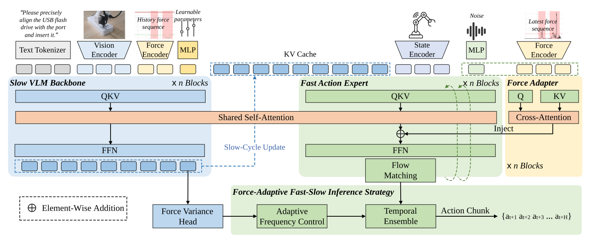
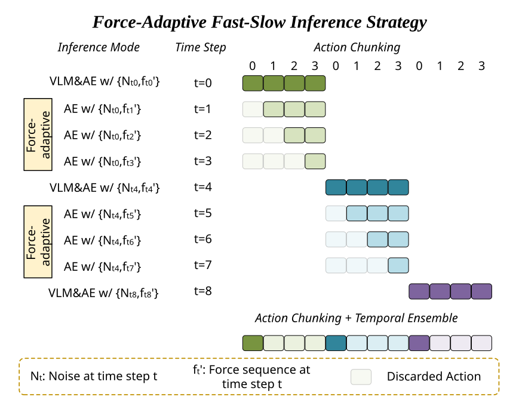
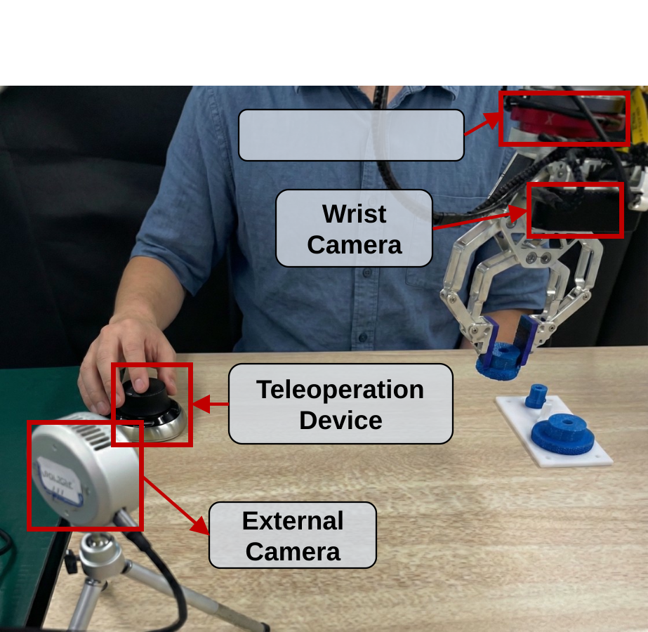

Success Rate
| Setting | pi0 | pi0+force | tavla | forcevla | favla |
|---|---|---|---|---|---|
| Unseen Colors | 0% | 10% | 70% | 40% | 70% |
| Height Var. | 10% | 40% | 60% | 40% | 70% |
Average Peak Contact Force
| Setting | pi0 | pi0+force | tavla | forcevla | favla |
|---|---|---|---|---|---|
| Unseen Colors | 20.0 N | 18.0 N | 14.4 N | 15.2 N | 13.0 N |
| Height Var. | 19.8 N | 16.9 N | 15.9 N | 15.8 N | 11.6 N |
FAVLA Force Variance Prediction MSE
| Gear Assembly | MSE |
|---|---|
| In Domain | 0.067 |
| Unseen Colors | 0.052 |
| Height Var. | 0.092 |
Success Rate
| Setting | pi0 | pi0+force | tavla | forcevla | favla |
|---|---|---|---|---|---|
| Unseen Box1 | 0% | 10% | 0% | 0% | 20% |
| Unseen Box2 | 0% | 0% | 10% | 0% | 20% |
Average Peak Contact Force
| Setting | pi0 | pi0+force | tavla | forcevla | favla |
|---|---|---|---|---|---|
| Unseen Box1 | 23.3 N | 15.4 N | 12.8 N | 25.0 N | 11.4 N |
| Unseen Box2 | 25.0 N | 22.7 N | 22.2 N | 25.0 N | 18.5 N |
FAVLA Force Variance Prediction MSE
| Box Flipping | MSE |
|---|---|
| In Domain | 0.046 |
| Unseen Box1 | 0.059 |
| Unseen Box2 | 0.064 |